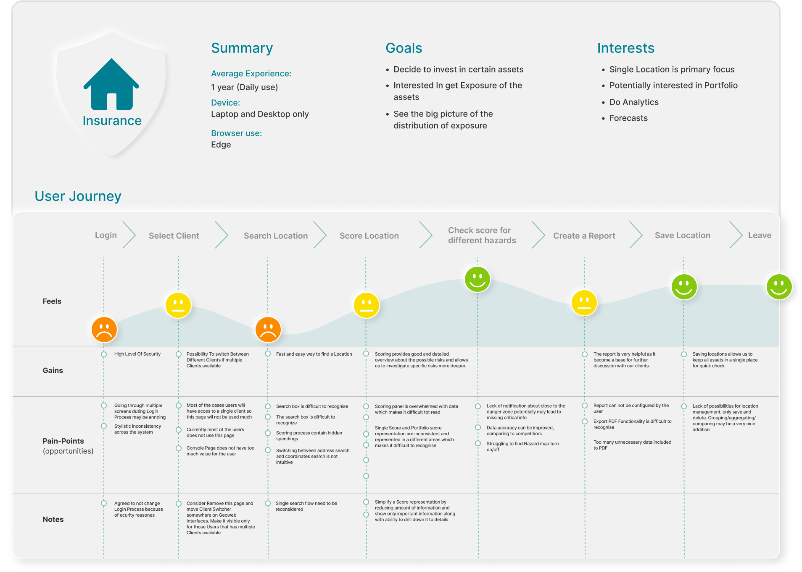
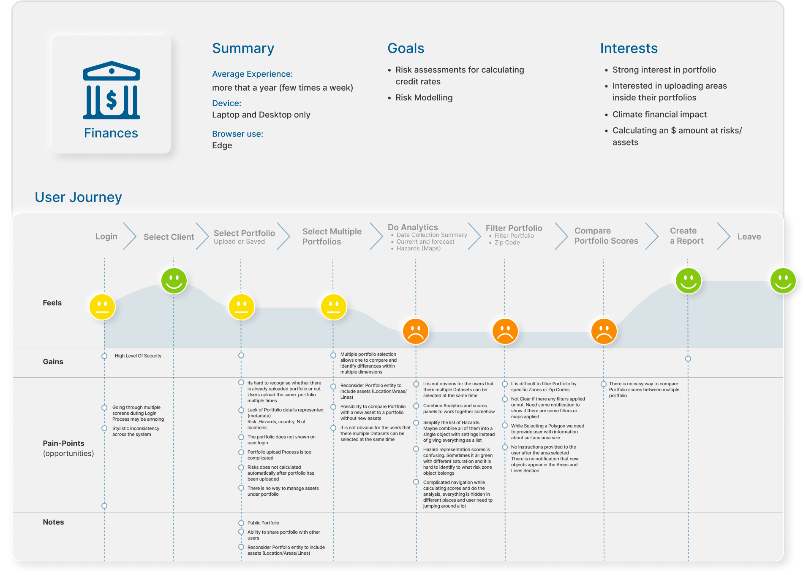
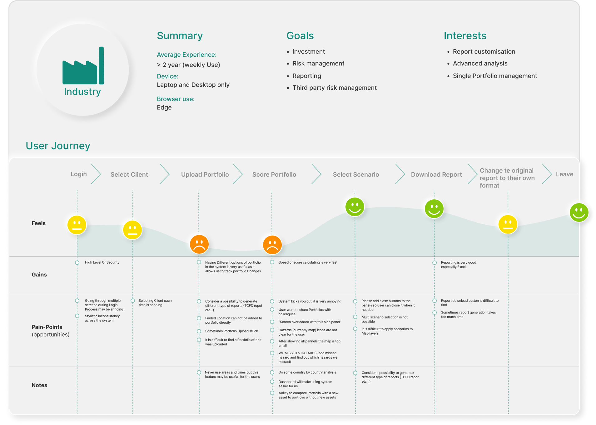

User Groups & Journey Maps
Drawing from user and stakeholder interviews, distinct user groups with shared needs and interests were identified. These user segments form the basis for crafting personas and Customer Journey Maps, facilitating a deeper understanding of their unique experiences and requirements.
Customer Journey Maps visualize and illuminate the end-to-end user experience with a product or service. This visualization aids in identifying pain points, moments of delight, and areas for improvement throughout the user journey.


